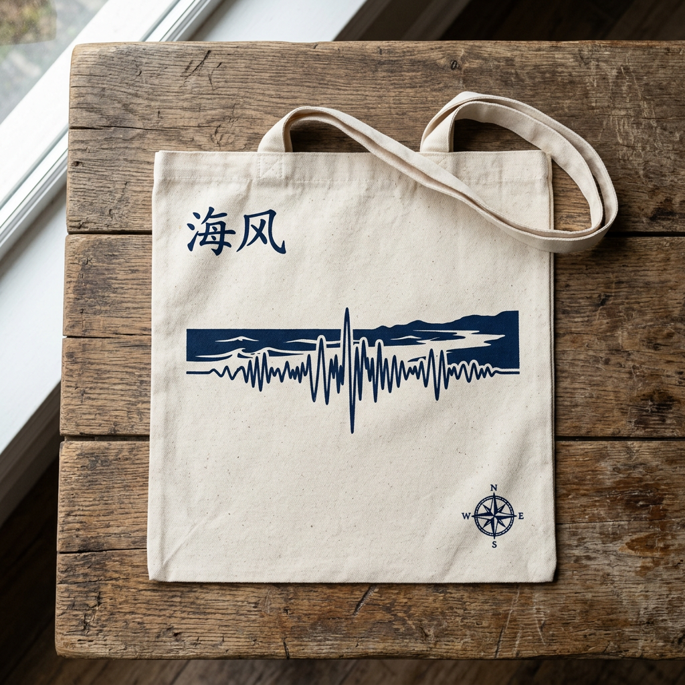
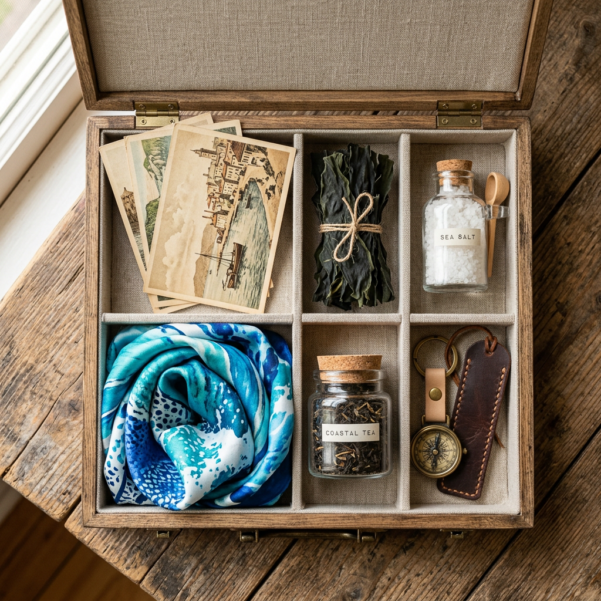

A FAST-PACED TOURISM PRODUCT FILM
68 海里 · 两面
用 AI 与方言连续体，重新翻译一座岛
WHY PINGTAN
走过近 200 座城市后，
我选择了平潭。
这里有特殊的海峡地理坐标，也有方言、石厝、蓝眼泪与青年旅行消费之间的连接点。
THE ISLAND
68 海里，
是一条可被讲述的距离。
猴研岛北港石厝龙凤头海滨蓝眼泪海岸
NIGHT WONDER
把不可预约的蓝眼泪，
做成可运营的体验机制。
实时概率、追泪点位、补偿权益，让天气不确定性不再只是遗憾。
CULTURE
石厝不是背景板，
它是海岛生活的结构。
VLM 扫描石墙，AR 叠加台风受力模拟，把建筑美学变成可互动的文化讲解。
AI ROUTE ENGINE
输入预算、天数、同行人，
生成路线地图。
不是只推套餐，而是先给游客一条看得懂、走得通、可调整的旅行路线。
上海福州平潭泉州/厦门
PASS CARD
通行 PASS，
把一次旅行变成长期连接。
酒店、民宿、餐饮、交通、文创与夜游船形成优惠网络，帮助游客留下，也帮助商户分润。
ONE-STOP PLATFORM
网站、小程序、数字人，
形成一站式入口。
游客端路线定制 / 套餐预订 / PASS 卡 / 文创商城
运营端客流热区 / 分润对账 / 舆情与应急
传播端AI 游记 / 明信片 / 小红书式 UGC
MERCHANDISE
文创不是纪念品陈列，
而是故事的延长线。
护照、黑胶、文镇、明信片、手账与礼盒共享统一视觉语言，支撑二次消费。




REGIONAL SYNERGY
从平潭出发，
连接福州、泉州与厦门。
把上海到平潭的交通现实，转化为海西区域联动的旅行方案。
BUSINESS & RISK
商业模型要可持续，
风险预案也要可执行。
自然不确定、服务承载、安全突发、口碑波动与合规问题，都在小程序和运营端预先处理。
收入结构路线套餐 + PASS 卡 + 文创 + 体验门票 + B 端定制
应急机制蓝眼泪补偿 / 台风改期 / 医疗绿色通道
社会价值带动民宿、餐饮、交通、非遗与青年就业
THE SEA IS NOT ONLY SEEN, BUT UNDERSTOOD
让 68 海里，
成为被听见的距离
68 海里 · 两面 · AI 文旅产品方案